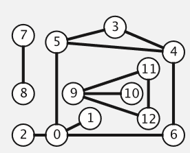
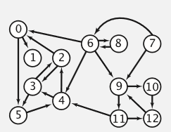
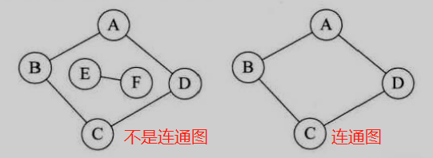
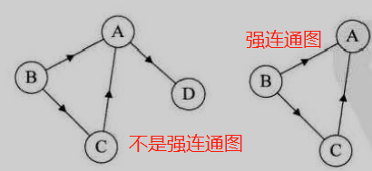
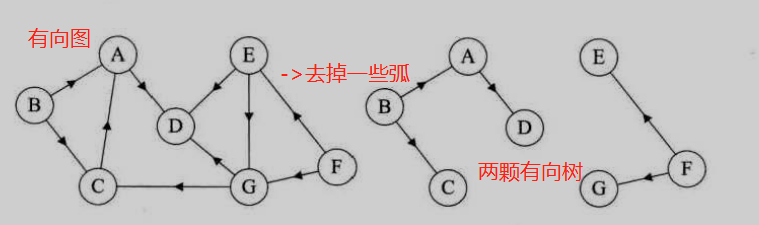

图论的相关概念及其储存结构
图论 (Graph theory) 是数学的一个分支，图是图论的主要研究对象。 图 (Graph) 是由若干给定的顶点及连接两顶点的边所构成的图形，这种图形通常用来描述某些事物之间的某种特定关系。通常表示成： G(V，E) G 表示一个圆，V是图中顶点的集合，E是图中边的集合。顶点用于代表事物，连接两顶点的边则用于表示两个事物间具有这种关系。
一.各种图的定义
1.无向边：若顶点Vi到Vj之间的边没有方向，则称这条边为无向边(Edge)，用无序偶(Vi,Vj)来表示。
2.有向边：若从顶点Vi到Vj的边有方向，则称这条边为有向边，也成为弧(Arc)，用有序偶< Vi, Vj >来表示，Vi称为弧尾，Vj称为弧头。
3.简单图：在图结构中，若不存在顶点到其自身的边，且同一条边不重复出现，则称这样的图为简单图。
4.无向完全图：在无向图中，如果任意两个顶点之间都存在边，则称该图为无向完全图。含有n个顶点的无向完全图有
5.有向完全图：在有向图中，如果任意两个顶点之间都存在方向互为相反的两条弧，则称该图为有向完全图。含有n个顶点的有向完全图有
6.稀疏图和稠密图：这里的稀疏和稠密是模糊的概念，都是相对而言的，通常认为边或弧数小于
7.有些图的边或弧带有与它相关的数字，这种与图的边或弧相关的数叫做权(Weight)，带权的图通常称为网(Network)。
8.假设有两个图G1=(V1,E1)和G2=(V2,E2)，如果V2⊆V1，E2⊆E1，则称G2为G1的子图(Subgraph)。
二.图的顶点与边之间的关系
1.对于无向图G=(V,E)，如果边(V1,V2)∈E，则称顶点V1和V2互为邻接点(Adjacent)，即V1和V2相邻接。边(V1,V2)依附(incident)于顶点V1和V2，或者说边(V1,V2)与顶点V1和V2相关联
2.顶点V的度(Degree)是和V相关联的边的数目，记为TD(V)。 对于有向图G=(V,E)，如果有< V1,V2>∈E，则称顶点V1邻接到顶点V2，顶点V2邻接自顶点V1。
以顶点V为头的弧的数目称为V的入度(InDegree)，记为ID(V)，以V为尾的弧的数目称为V的出度(OutDegree)，记为OD(V)，因此顶点V的度为TD(V)=ID(V)+OD(V)。
5.无向图G=(V,E)中从顶点V1到顶点V2的路径(Path)。如果G是有向图，则路径也是有向的。
三.连通图
1.在无向图G中，如果从顶点V1到顶点V2有路径，则称V1和V2是连通的，如果对于图中任意两个顶点Vi和Vj都是连通的，则称G是连通图(ConnectedGraph)
2.无向图中的极大连通子图称为连通分量。 注意以下概念： (1)首先要是子图，并且子图是要连通的； (2)连通子图含有极大顶点数； (3)具有极大顶点数的连通子图包含依附于这些顶点的所有边。
3.在有向图G中，如果对于每一对Vi到Vj都存在路径，则称G是强连通图。 有向图中的极大强连通子图称为有向图的强连通分量。
4.最后我们再来看连通图的生成树定义。 所谓的一个连通图的生成树是一个极小的连通子图，它含有图中全部的n个顶点，但只有足以构成一棵树的n-1条边。
5.如果一个有向图恰有一个顶点入度为0，其余顶点的入度均为1，则是一棵有向树。
一个有向图由若干颗有向树构成生成森林：生成树是对应连通图来说，而生成森林是对应非连通图来说的 我们知道，非连通图可分解为多个连通分量，而每个连通分量又各自对应多个生成树（至少是 1 棵），因此与整个非连通图相对应的，是由多棵生成树组成的生成森林。
#include < iostream >
using namespace std;
int main()
{
cout << "Hello, world!" << endl;
return 0;
}
Hello World!